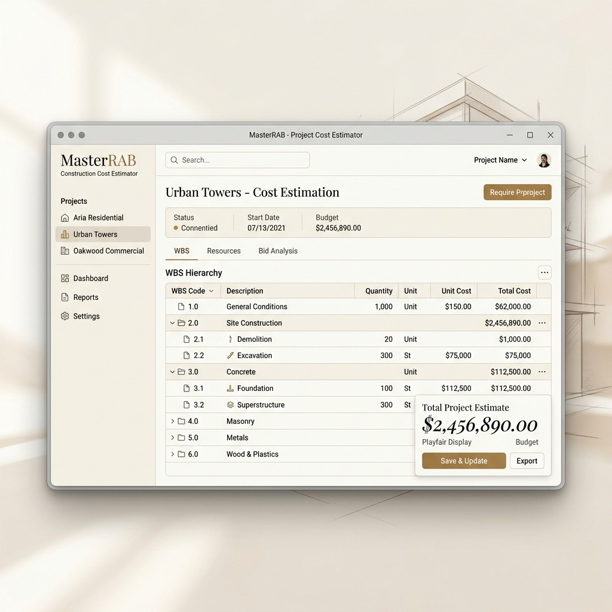

Aplikasi desktop modular untuk menyusun Work Breakdown Structure (WBS), menghitung Analisa Harga Satuan Pekerjaan (AHSP) standar SNI, dan menghasilkan bill of quantities dalam hitungan menit.

Dirancang khusus untuk estimator, kontraktor, dan perencana proyek konstruksi mandiri.
Susun kelompok pekerjaan secara terstruktur (Work Breakdown Structure) hingga kedalaman berapapun. Tambahkan item pekerjaan, sambungkan ke referensi AHS, dan kelola perkiraan volume secara dinamis dengan penyesuaian otomatis terhadap perubahan koefisien.
Integrasikan butir pekerjaan langsung ke library Analisa Harga Satuan Pekerjaan. Setiap revisi pada upah tenaga, sewa alat, atau harga material global secara real-time memperbarui nilai satuan proyek Anda.
Hasilkan rekapitulasi kebutuhan bahan bangunan, upah harian tenaga kerja, dan penyewaan alat secara presisi. Memudahkan Anda dalam pengadaan logistik proyek tanpa risiko kekurangan bahan.
Ekspor seluruh hasil perhitungan rencana anggaran biaya ke dokumen Microsoft Excel formal. Dibuat rapi lengkap dengan lembar rekapitulasi utama, rincian AHS per item pekerjaan, dan bill of materials terpisah yang siap dipresentasikan ke klien.
Dapatkan aplikasi Estimato installer lokal untuk Windows. Berjalan sepenuhnya offline tanpa memerlukan koneksi internet, memastikan data proyek Anda tetap aman di perangkat Anda.
Download Estimato v1.0.0 (Windows)